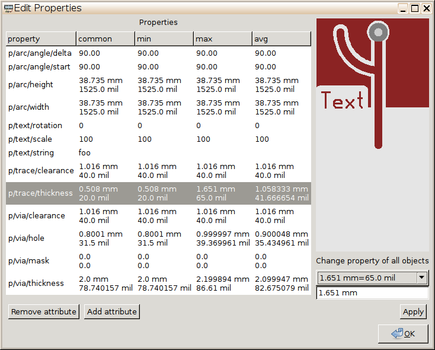

| Main | News | People | Events & timeline | pcb-rnd |
|---|
Propedit introduces a property editor window in gtk that is able to edit attributes and core properties of all selected objects. Core properties include all hardwired properties of objects, such as geometry (e.g. trace width, hole diameter, clearance) or textual data (e.g. string of a text).

Properties and attributes of the selected objects are collected in a sorted list - each row of the list is a property (starting with p/) or an attribute (starting with a/). For each row all values seen in the selection are also collected so that the following values can be presented on the list, per row:
When the user clicks on a row, an edit box is activated and the value can be changed. A combo box lists all existing values for the given row, so it is easy to unify the value of a property or attribute among all selected objects to one of the existing values, but the user is also free to enter a new value.
It is also possible to remove existing attributes or to add new attributes.